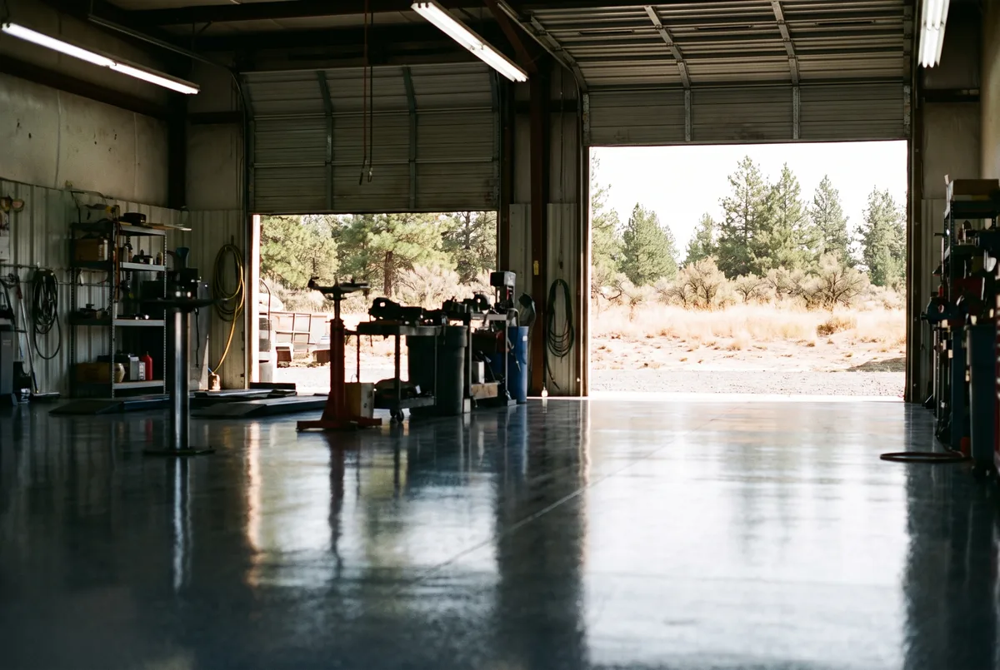

Call (509) 355-7480 or send your project details below. We serve Spokane Valley, Opportunity, Veradale, Liberty Lake, and the greater Spokane, WA area. Office hours are Monday through Friday, 8:00 AM to 6:00 PM.
We ask a few quick questions about your floor — garage, basement, or shop, approximate square footage, and current condition — then schedule a free on-site visit. We measure, check the slab for cracks and moisture, and give you a firm price before any work starts. No high-pressure sales pitch, no inflated phone quote that changes once we show up.
Serving Spokane Valley, Opportunity, Veradale, Liberty Lake, and the greater Spokane, WA area.
Phone: (509) 355-7480
Hours: Monday – Friday, 8:00 AM – 6:00 PM
